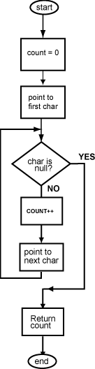

What character is at 0x10000008 ? t
What character is at 0x10000010 ? t
The length of a null-terminated string is defined as the number of characters it contains not counting the null. To calculate length, start the count at zero. Then increment the count for each successive non-null byte. When you hit the null, stop counting.
The structured flow chart describes the algorithm in general terms. Assembly language details are left to the coding stage. Below is an outline of the program. The string is hard-coded into the program. Input/Output is covered in a later chapter.

## strlen.asm
##
## Count the characters in a string
##
## Registers:
## $8 -- count
##
.text
.globl main
# Initialize
main: ori $8,$0,0 # count = 0
# while not ch==null do
loop: . . .
. . .
. . .
j loop
sll $0,$0,0 # branch delay slot
# finish
done: sll $0,$0,0 # target for branch
.data
string: .asciiz "Time is the ghost of space."
Why is the null not counted in the length of a string? (Hint: think about what happens when two strings are concatenated.)